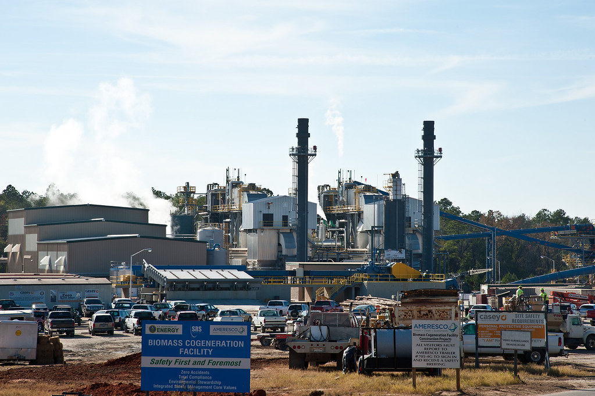

Biomass energy is an organic renewable resource that is reletively new. Scientists work to convert organic material(biomass) into biofuels that can be
used in everything from farm equipment to jet planes. Now there are also many flexfuel pumps at gas stations that are a type of biofuel.
There are many benefits to using biofuel over conventional petroleum based fuels.
The U.S. Department of Energy report on Bioeconomy concluded that the market is thriving. By 2040, The U.S. has the potential to pruduce 1 billion dry tons of
non-food biomass annually and keep $260 billion in the U.S. economy.
